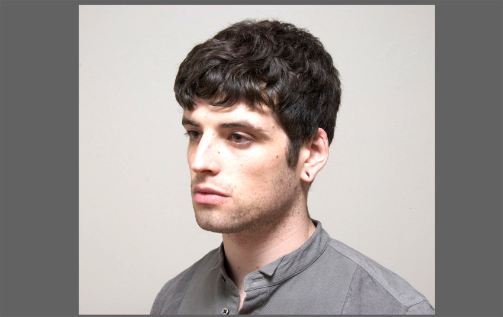

photoshop
이중 노출
man.jpg, background.jpg
크롭툴, 마술봉툴, 스팟힐링브러쉬툴, 레벨(Levels)
크롭툴, 마술봉툴, 스팟힐링브러쉬툴, 레벨(Levels)
완성
작업 순서
Step 1
man.jpg 이미지를 오픈 한 후 크롭툴을 이용하여 이미지의 양 옆을 삭제한다.
Step 2
Image > Adjustments > Levels 메뉴를 이용하여 밝기를 조절한다.
Step 3
Spot Healing Brush (I)툴을 이용하여 귀 부분을 깨끗하게 수정한다
Step 4
마술봉툴로 배경 부분을 클릭한 후 + + 을 눌러 선택 영역 반전을 실행한다
Step 5
옵션바에 있는 버튼을 클릭하고 'Properties' 패널이 열리면 'Edge Detection'의 Radius 값을 2px, Output Settings 의 Output To 를 "New Layer width Layer Mask"로 변경한 후 버튼을 클릭한다.
마술봉툴로 배경 부분을 클릭한 후 + + 을 눌러 선택 영역 반전을 실행한다